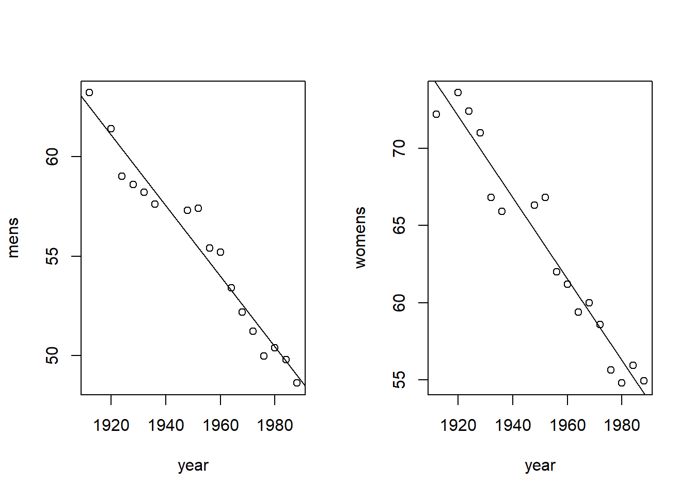

21 Practice Final Exam
21.1 100-Meter Freestyle Olympic Winning Time (seconds)
- Create a table in R that looks like the data above. Call this table: swim
#> year mens womens
#> 1 1912 63.20 72.20
#> 2 1920 61.40 73.60
#> 3 1924 59.00 72.40
#> 4 1928 58.60 71.00
#> 5 1932 58.20 66.80
#> 6 1936 57.60 65.90
#> 7 1948 57.30 66.30
#> 8 1952 57.40 66.80
#> 9 1956 55.40 62.00
#> 10 1960 55.20 61.20
#> 11 1964 53.40 59.40
#> 12 1968 52.20 60.00
#> 13 1972 51.22 58.59
#> 14 1976 49.99 55.65
#> 15 1980 50.40 54.79
#> 16 1984 49.80 55.92
#> 17 1988 48.63 54.93- On 1 page, plot two graphs: a) year (x axis) vs Menâs time (y axis) and b) year (x axis) vs Womenâs time (y axis). Add a best fit line for menâs and womenâs winning times.

- Determine the womenâs time in 2016 according to the line of best fit based solely on the information provided by this best fit line (i.e, do NOT use a prediction function) and use R as a calculator obtain an estimate for the 2016 winning time.
#> [1] 46.75584- Create a table based on swim that is comprised only of womenâs times for the years 1932 through 1972. Call this table swim2. Based on swim2, predict the winning womenâs times for 1976, 1980, 1984, and 1988. Feel free to use a
predictfunction.
#> fit lwr upr
#> 1 57.30314 56.14272 58.46356
#> 2 56.24879 54.98460 57.51298
#> 3 55.19444 53.81969 56.56919
#> 4 54.14009 52.64950 55.6306721.2 Starwars fun
Use the starwars data in the dplyr package to answer the following questions:
- Body Mass Index (BMI) is defined as the body mass divided by the square of the body height. Use pounds and inches (convert given data as needed) and use this formula to cacluate BMI:
Weight (lb) / [height (in)]2 x 703
#> # A tibble: 6 x 7
#> species mass height height.in height.in.squar~ mass.lbs
#> <chr> <dbl> <int> <dbl> <dbl> <dbl>
#> 1 Hutt 1358 175 68.9 4747. 2994.
#> 2 Vulptere~ 45 94 37.0 1370. 99.2
#> 3 Yoda's s~ 17 66 26.0 675. 37.5
#> 4 Human 120 178 70.1 4911. 265.
#> 5 Droid 140 200 78.7 6200. 309.
#> 6 Droid 32 96 37.8 1428. 70.5
#> # ... with 1 more variable: bmi <dbl>- How many of each species are on each homeworld?
#> # A tibble: 58 x 3
#> species homeworld n
#> <chr> <chr> <int>
#> 1 Human Tatooine 8
#> 2 Human Naboo 5
#> 3 Human <NA> 5
#> 4 Droid <NA> 3
#> 5 Gungan Naboo 3
#> 6 Human Alderaan 3
#> 7 Droid Tatooine 2
#> 8 Human Corellia 2
#> 9 Human Coruscant 2
#> 10 Kaminoan Kamino 2
#> # ... with 48 more rows- What homeworlds have the greatest % humans?
#> # A tibble: 16 x 4
#> # Groups: homeworld [16]
#> homeworld humans total.individuals pct.human
#> <chr> <int> <int> <dbl>
#> 1 Alderaan 3 3 1
#> 2 Corellia 2 2 1
#> 3 Stewjon 1 1 1
#> 4 Eriadu 1 1 1
#> 5 Bestine IV 1 1 1
#> 6 Socorro 1 1 1
#> 7 Bespin 1 1 1
#> 8 Chandrila 1 1 1
#> 9 Haruun Kal 1 1 1
#> 10 Serenno 1 1 1
#> 11 Concord Dawn 1 1 1
#> 12 Tatooine 8 10 0.8
#> 13 Coruscant 2 3 0.667
#> 14 <NA> 5 10 0.5
#> 15 Naboo 5 11 0.455
#> 16 Kamino 1 3 0.333